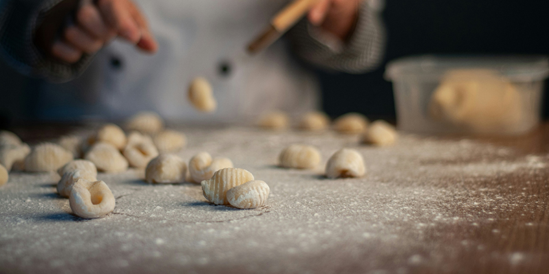

Blue Cheese Gnocchi

Description
Creamy and soothing, this warming bake makes a great standby for friends
and family.
Ingredients
- 500g fresh gnocchi
- 250g bag baby spinach
- 100ml/3½ fl oz crème fraîche (half-fat if preferred)
- 4 tbsp grated parmesan
- 100g soft blue cheese
Steps
-
Cook the gnocchi in a large pan of boiling water according to pack
instructions. Plunge the spinach into the same pan, then immediately
drain through a colander and shake off any excess water.
-
Put the crème fraîche in a small ovenproof dish with the grated
parmesan. Add the hot, drained gnocchi and spinach and give everything a
good stir.
- Crumble the blue cheese over and season with ground pepper.
-
Slide the dish under a hot grill until the cheese is bubbling and
golden. Serve immediately.
Home